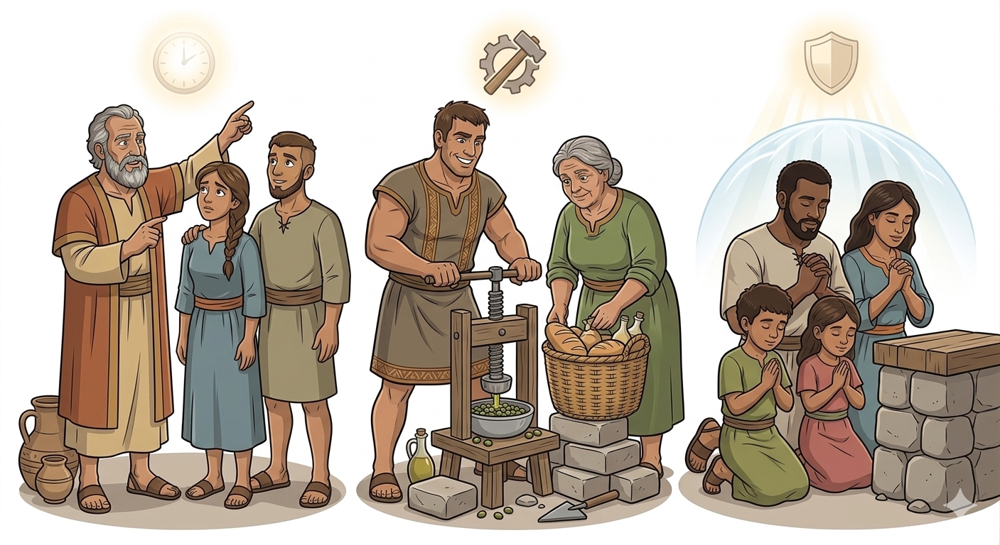
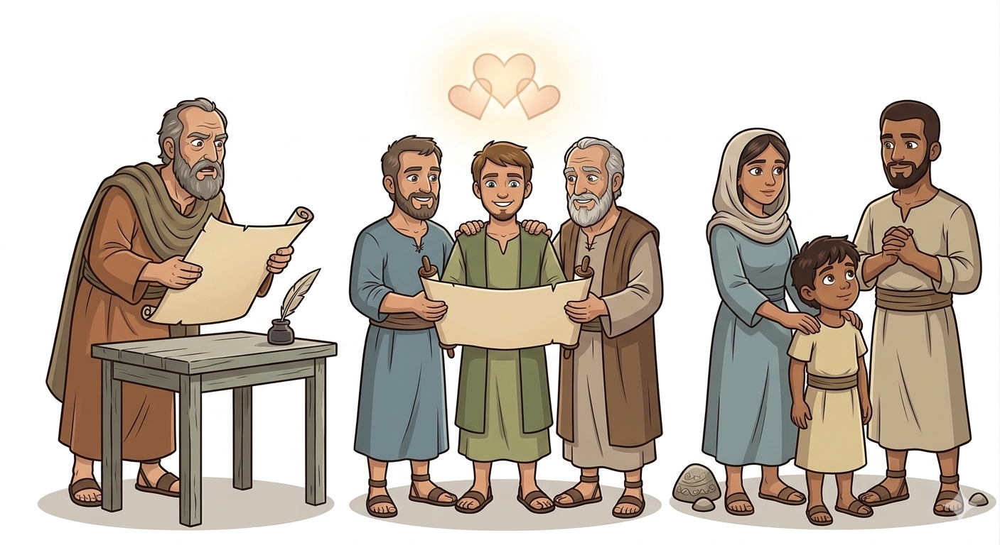
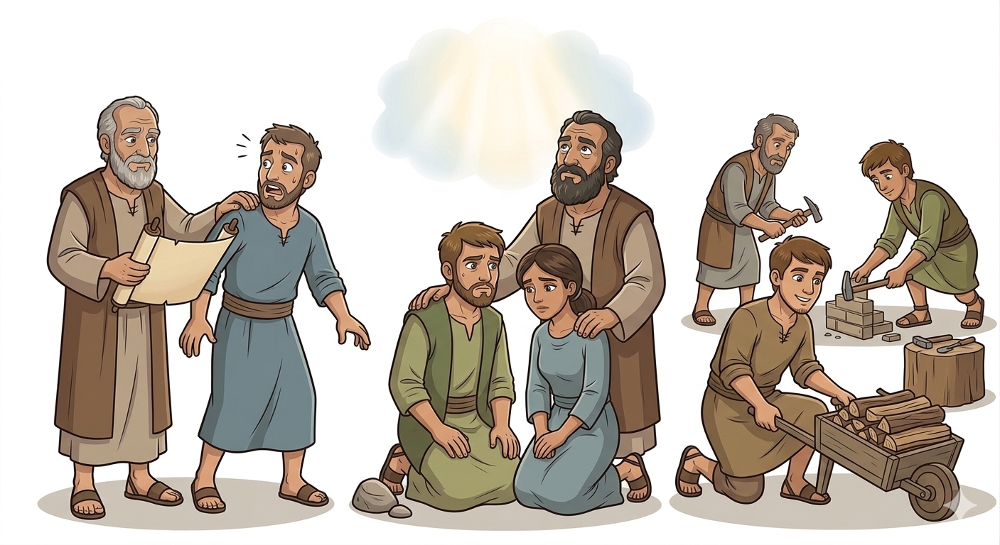
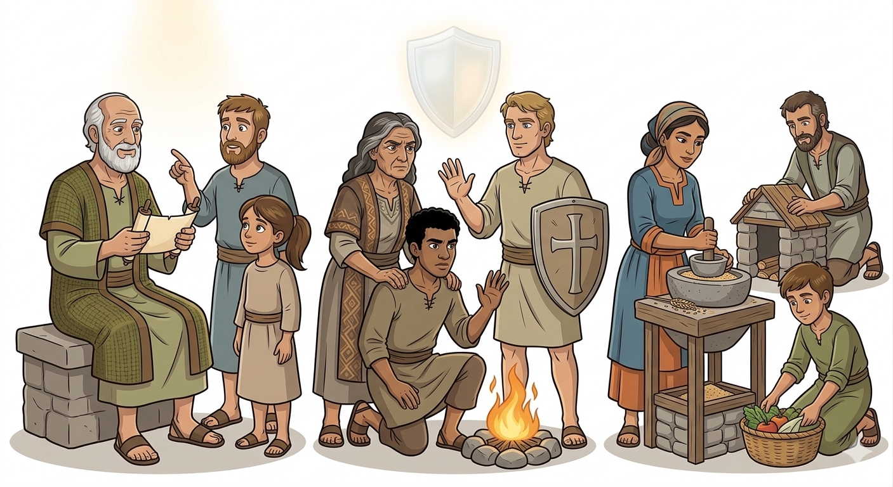
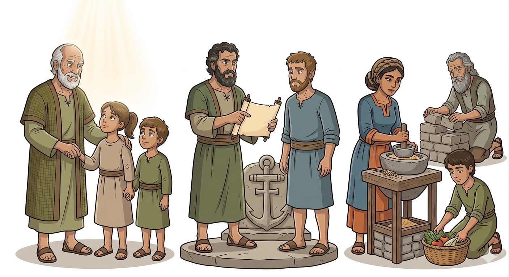
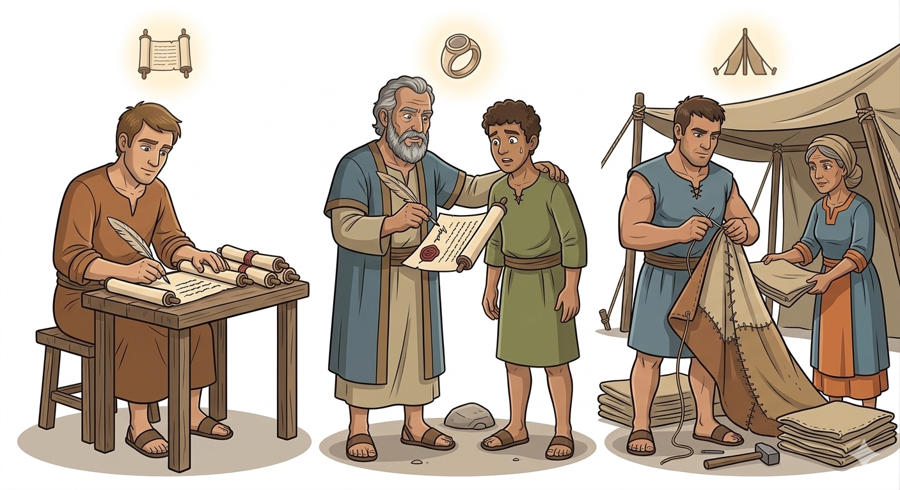

Esperança Firme na Volta de Jesus — Um Resumo Visual para Crianças
Não se apressem, não fiquem confusos,
Jesus voltará, mas no tempo de Deus, glorioso!
Algumas coisas precisam acontecer primeiro,
Mas Ele virá com poder verdadeiro!
📖 2 Tessalonicenses 2:1-3
Enquanto esperamos, não fiquem parados,
Trabalhem com alegria, sejam dedicados!
Não deixem a fé se esfriar ou cair,
Continuem fazendo o bem até Jesus vir!
📖 2 Tessalonicenses 3:6-13
Quando as dificuldades vierem te atacar,
Lembre-se: Deus é fiel e vai te guardar!
Ele fortalece seu coração com amor,
E protege você do mal e do temor!
📖 2 Tessalonicenses 3:3
"Mas fiel é o Senhor, que vos confirmará e guardará do maligno."
— 2 Tessalonicenses 3:3
Quando o mundo parece assustador ou confuso, este versículo é um escudo! Fiel é o Senhor — Deus não falha, não mente, não abandona. Ele confirmará você, ou seja, vai te deixar firme como uma rocha. E vai te guardar do mal — como um pai que protege seu filho com todo o seu amor!

Paulo escreveu esta segunda carta com urgência, preocupado com confusões sobre a volta de Jesus. Seu coração de pai espiritual não descansava enquanto via seus filhos na fé sendo enganados!
"...para que o nome do nosso Senhor Jesus seja glorificado em vós, e vós nele, segundo a graça do nosso Deus."
— 2 Tessalonicenses 1:12
Esta carta foi escrita por Paulo junto com Silas e Timóteo — três líderes unidos pelo mesmo amor pela igreja de Tessalônica. Uma carta de três corações em um!
"Paulo, e Silvano, e Timóteo, à igreja dos tessalonicenses em Deus nosso Pai e no Senhor Jesus Cristo."
— 2 Tessalonicenses 1:1
Enfrentavam perseguição, confusão sobre o fim dos tempos e alguns tinham parado de trabalhar. Mas Paulo se orgulhava da fé e do amor que cresciam neles apesar de tudo!
"...de tal modo que nos gloriamos de vós nas igrejas de Deus, pela vossa paciência e fé em todas as vossas perseguições."
— 2 Tessalonicenses 1:4
Paulo explica que Jesus não voltou ainda e que algumas coisas precisam acontecer antes. Ele corrige quem dizia que o "Dia do Senhor" já tinha chegado — e pedia calma!
"...que não vos perturbeis facilmente em vosso modo de pensar, nem vos alarmeis... como se o dia do Senhor estivesse iminente."
— 2 Tessalonicenses 2:2
Paulo elogia a fé dos tessalonicenses que sofriam perseguição e os encoraja: Deus é justo e dará descanso aos que confiam nele e julgará os que perseguem!
"...o que é evidência do justo julgamento de Deus, para que sejais julgados dignos do reino de Deus."
— 2 Tessalonicenses 1:5
Paulo repreende os que pararam de trabalhar esperando Jesus. A esperança não é desculpa para a preguiça — devemos trabalhar com responsabilidade enquanto aguardamos!
"Se alguém não quiser trabalhar, também não coma."
— 2 Tessalonicenses 3:10


Nos ajuda a entender o retorno de Cristo com clareza: não devemos ficar ansiosos, mas viver com esperança tranquila, sabendo que Ele voltará no tempo perfeito de Deus!
"...quando o Senhor Jesus se manifestar desde o céu com os anjos do seu poder."
— 2 Tessalonicenses 1:7
Ensina que Deus é completamente fiel — Ele nos confirma e nos guarda do mal. Podemos permanecer firmes porque não dependemos da nossa própria força!
"Mas fiel é o Senhor, que vos confirmará e guardará do maligno."
— 2 Tessalonicenses 3:3
Mostra que enquanto esperamos Jesus, devemos continuar trabalhando e fazendo o bem — a esperança cristã não nos torna preguiçosos, mas mais dedicados!
"...vós, porém, irmãos, não vos canseis de fazer o bem."
— 2 Tessalonicenses 3:13
Paulo escreveu para fortalecer a esperança dos cristãos na volta de Jesus. A espera pode ser longa, mas o próprio Jesus e Deus Pai consolam nossos corações!
"Ora, o nosso Senhor Jesus Cristo... vos consolide e confirme em toda boa obra e palavra."
— 2 Tessalonicenses 2:16-17
Alguns ensinavam coisas erradas sobre o fim dos tempos. Paulo pede que os cristãos fiquem firmes nas tradições que aprenderam — a sã doutrina é nossa âncora!
"Assim, pois, irmãos, estai firmes, e guardai as tradições que vos foram ensinadas."
— 2 Tessalonicenses 2:15
Paulo queria que os cristãos vivessem de forma responsável, trabalhando em sossego e comendo o seu próprio pão — sem depender dos outros desnecessariamente.
"...a esses tais ordenamos e exortamos, em nosso Senhor Jesus Cristo, que trabalhem com sossego."
— 2 Tessalonicenses 3:12


Paulo escreveu esta carta apenas alguns meses depois da primeira! Era 51-52 d.C. Ele estava tão preocupado com os mal-entendidos que não perdeu tempo.
Paulo termina a carta escrevendo de próprio punho para provar que era dele! Por quê? Porque pessoas mal-intencionadas estavam espalhando cartas falsas em seu nome (2 Ts 2:2)!
Quando estava em Tessalônica, Paulo trabalhava dia e noite fazendo tendas para não ser um fardo financeiro para a igreja. Ele praticava o que pregava! (2 Ts 3:8)
Paulo se orgulhava da fé dos tessalonicenses mesmo sendo perseguidos. Como você reage quando alguém faz piada da sua fé ou te exclui por causa de Jesus? O que te ajudaria a permanecer firme?
Alguns pararam de trabalhar esperando Jesus voltar. Mas Paulo disse que a esperança verdadeira nos faz trabalhar mais, não menos. Como sua fé te motiva a estudar, ajudar e agir bem hoje?
2 Tessalonicenses 3:3 diz que Deus é fiel e te guarda do mal. Em que situação da sua vida você mais precisa lembrar dessa promessa agora? Como você pode depender da fidelidade de Deus nesse momento?
Escreva 2 Tessalonicenses 3:3 em um cartão pequeno e carregue na carteira ou bolso. Sempre que sentir medo ou ansiedade, leia em voz alta — é uma promessa real!
✏️ MemorizaçãoLeia 2 Tessalonicenses 3:6-13 e escolha uma tarefa pendente — dever de casa, quarto bagunçado, ajuda em casa — e faça com excelência, como se Jesus fosse chegar logo!
💪 PráticaComo Paulo orava pelos tessalonicenses, ore por alguém que está passando por algo difícil. Diga a essa pessoa: "Estou orando por você" — e realmente ore!
❤️ Ação© 2025 - Trilho Kids
Desenvolvido com ❤️ para crianças